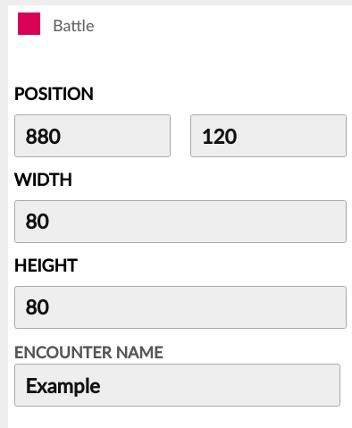

You may read more about this function over at the Room Functions & Properties page.
If the Trigger happens to have a sprite["sprite"] property, this sprite will be automatically hidden after the battle ends.

Yes, these Triggers usually have large hitboxes.
encounterName The name of the Battle file within Lua/Battles to be loaded when this Trigger "receives" the player's Avatar.
Battle Triggers don't have sprites by default... Here's an example on how you may add one!
function self.OnRoomSetup(roomName)
if roomName == "Room1" then
-- The poseur enemy that moves around the field.
local poseur = self.FindObjectInRoom("Triggers", 2)
poseur["sprite"] = CreateSprite("CreateYourKris/Monsters/Poseur/Idle/0", "OWEntities")
poseur["sprite"].SetAnimation(
{ 0, 1, 2, 3, 4, 0, 0, 0, 0, 0, 0, 0, 0, 0, 0 },
3/15, "CreateYourKris/Monsters/Poseur/Idle" )
poseur["sprite"].MoveTo(poseur.x+36, poseur.y-44)
poseur["sprite"].SetPivot(.5, 0)
poseur["sprite"].SetParent(poseur.hitbox)
-- Pretty self explanatory...
poseur["sprite"]["ysort"] = true
table.insert(self.overworldYSortQueue, poseur["sprite"])
table.insert(self.spriteTrashQueue, poseur["sprite"])
end
end